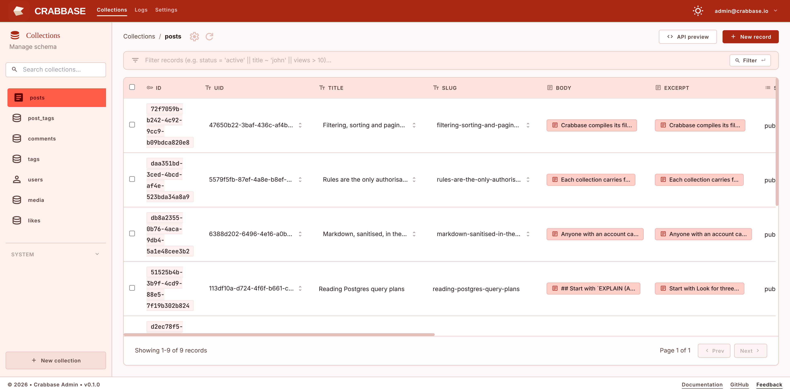

Blazingly fast backend in a single Rust binary.
Crabbase gives you embedded SQLite/RocksDB performance, instant realtime subscriptions, automated REST/GraphQL APIs, and an integrated admin dashboard out of the box. Zero garbage collection. Zero runtime panics.

Why systems engineers and full-stack builders switch to Crabbase.
Eliminate node micro-services sprawl and fragile ORMs. Everything you need is compiled directly into an ultra-lean 18MB binary.
Pure Rust Engine
Zero garbage collection pauses, tiny memory footprint (<12MB RAM idle), instant cold starts in under 2ms, and deterministic tail latency guarantees.
Embedded & Distributed
Link directly as a crate inside your Rust project, or run as a standalone cluster across multi-region edge instances backed by Raft consensus.
Realtime SSE & WebSockets
Broadcast high-concurrency database row mutations to web, mobile, and IoT clients with sub-millisecond dispatch through Tokio channels.
Batteries-Included Admin
Manage dynamic schemas, collections, granular access rules, API keys, audit logs, and cron workers through a polished built-in GUI dashboard.
Multi-Language SDKs
Ship products faster with first-class type-safe clients: Rust, TypeScript/JavaScript, Go, Python, and Flutter/Dart with autogenerated collection types.
Self-Hostable Anywhere
Deploy on a $4/mo VPS, Raspberry Pi, Kubernetes, fly.io, or bare metal without Docker daemon requirements or database dependencies.
Designed for predictable tail-latencies under saturated loads.
Tested on 8 vCPU Hetzner Cloud instances simulating 10,000 concurrent HTTP keep-alive connections performing mixed authenticated point-reads and writes.
Drop in. Subscribe. Ship.
Whether you are writing embedded low-level microservices in Rust or building a reactive front-end in Next.js or SvelteKit, the syntax is clean and intuitive.
Built for scale, loved by developers.
"We migrated our fleet of 4,000 edge POS terminals from a complex SQLite + custom daemon sync stack to Crabbase embedded. Our RAM footprint dropped by 80% and syncing latency is now near instantaneous."
"PocketBase proved how nice an all-in-one backend could be, but Crabbase took that concept and gave it strict Rust-grade type safety and 100k+ req/s throughput. It’s our default starting stack for all new apps."
"Running an entire relational and document database with built-in SSE stream workers on a 512MB RAM cloud instance with 0.8ms p99 response times feels like wizardry. Crabbase is a triumph for Rust software."
Ready to upgrade your backend architecture?
Run Crabbase in under 60 seconds on your local machine or link it directly into your Rust workspace as an embedded crate.